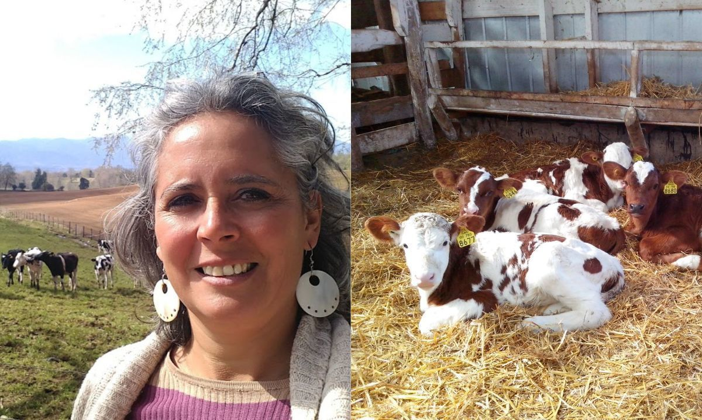
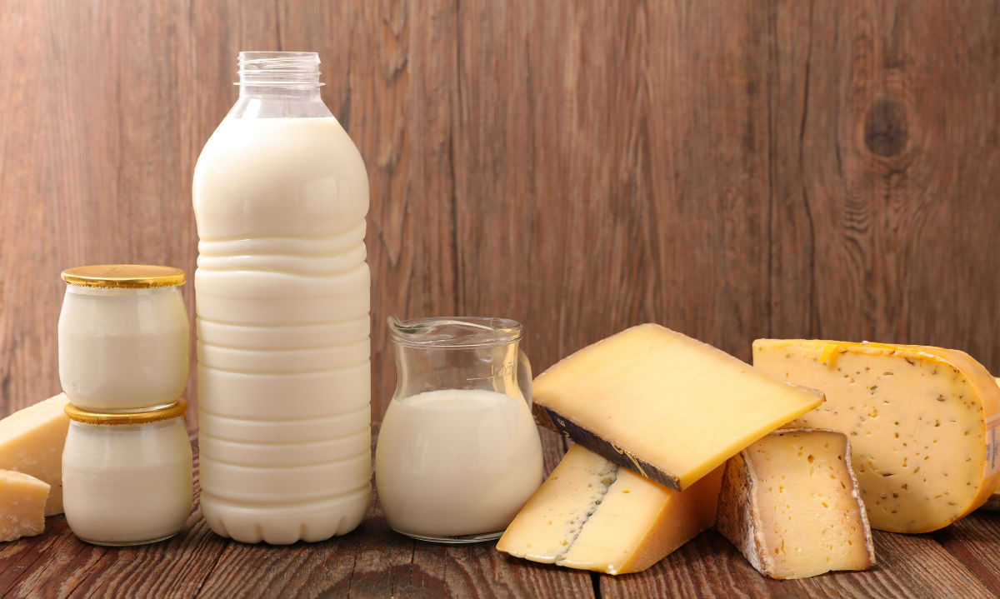
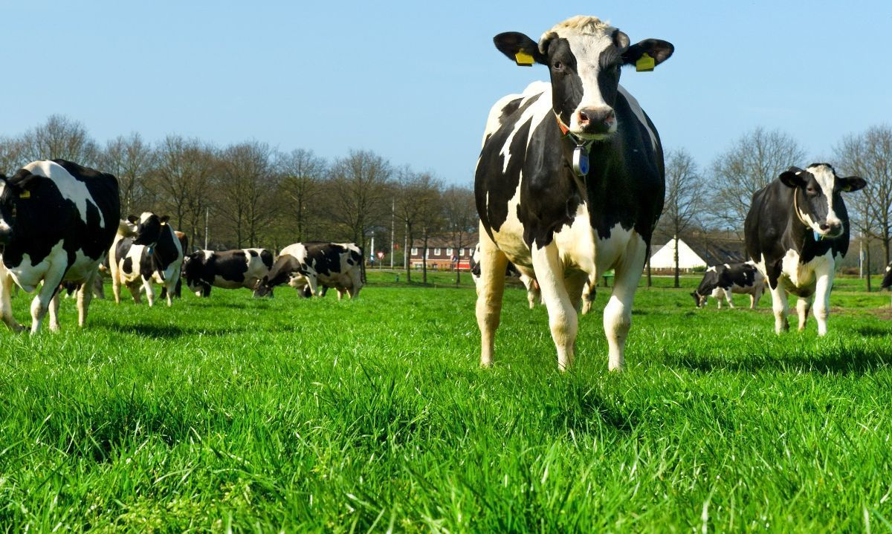

Sabores del Campo es más que una distribuidora de productos lácteos; Somos un vínculo entre los productores locales y los consumidores, llevando lo mejor de la naturaleza a tu mesa. Nuestro compromiso con la calidad y la frescura es insuperable, seleccionando cuidadosamente cada producto para garantizar una experiencia deliciosa y nutritiva. Con una pasión arraigada en la tradición y el respeto por la tierra, estamos dedicados a ofrecerte productos lácteos de la más alta calidad, directamente desde el corazón del campo hasta tu hogar.

Experta destaca claves de las primeras 8 semanas de crianza de las terneras para alcanzar su óptimo potencial productivo(Link)

Exportaciones de productos lácteos suben 25,3% al mes de febrero(Link)

Expertos UdeC buscan reducir el impacto ambiental del ganado bovino de leche mediante el uso de plantas forrajeras(Link)

Renato Cavieres
Ingeniería en informática
TI2031/D-IEI-N3-P1-C5